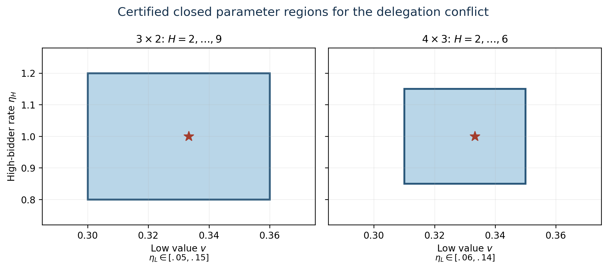
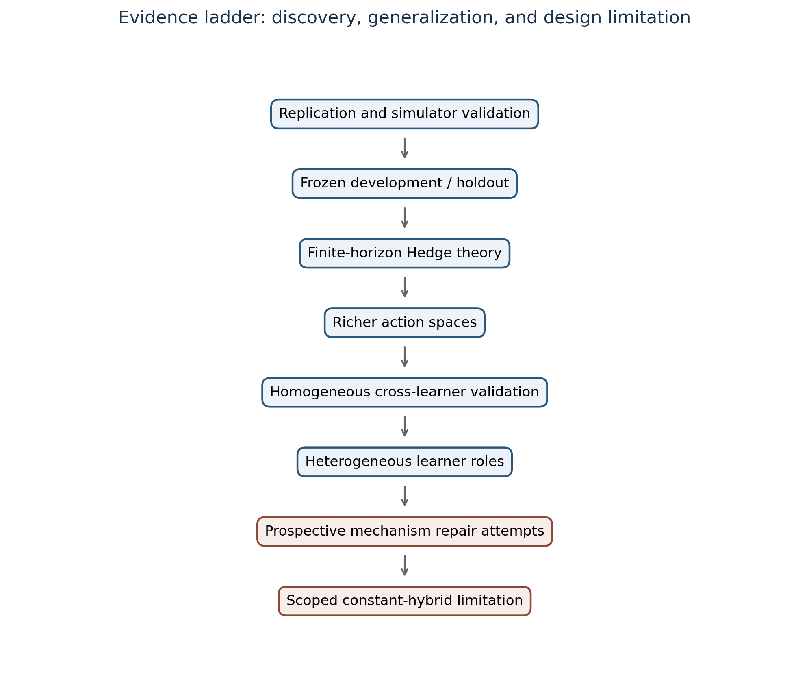
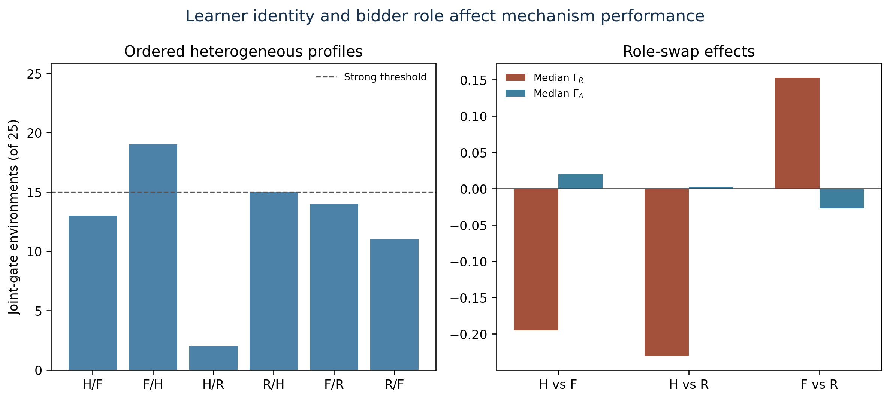
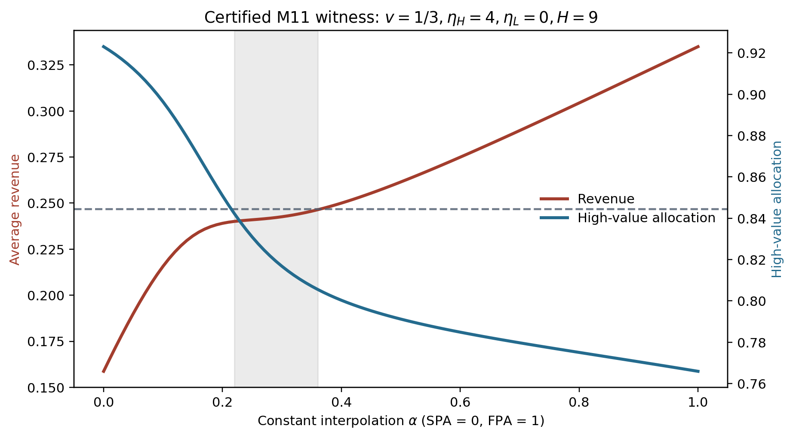

Theory
Exact Hedge analysis proves the conflict on explicit finite-action rectangles, including a richer 4x3 model. The theory is finite-horizon and Hedge-specific.

Research project · v1.1.0
What happens to standard auction rankings when bidders delegate repeated bidding decisions to adaptive algorithms?
Across frozen finite-horizon studies, first-price auctions tend to protect seller revenue, while second-price auctions tend to protect efficient allocation and welfare. The direction survives three learner families and ordered heterogeneous pairs, but learner identity and bidder role materially change magnitudes and create 29 revenue-ranking reversals.

Exact Hedge analysis proves the conflict on explicit finite-action rectangles, including a richer 4x3 model. The theory is finite-horizon and Hedge-specific.

Homogeneous Hedge, FTPL, and regret matching pass 25/25 primary cells. Ordered mixtures preserve aggregate signs but expose strong role effects.

Two interpretable repairs fail prospective gates. At (v, ηH, ηL, H)=(1/3,4,0,9), a certified constant hybrid faces opposed revenue and allocation derivatives, with incompatible midpoint safety requirements.

No successful delegation-proof mechanism, universal impossibility, heterogeneous-learning theorem, or independent external replication is claimed. The unused mechanism holdout remains unopened.
Delegation-Proof Market Design: Revenue–Allocation Tradeoffs under Adaptive Bidding, v1.1.0. Author metadata to be verified.